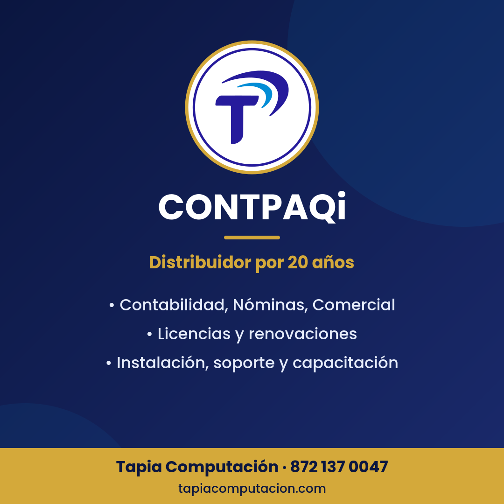
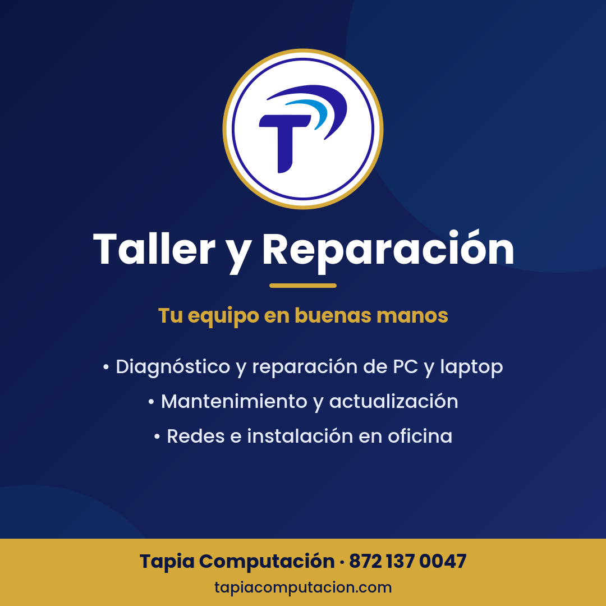

Tu CONTPAQi funcionando, tus equipos al día y tu negocio automatizado
Asesores A Un Clic De Distancia. 20 años instalando, soportando y capacitando en CONTPAQi, con un técnico de verdad que también repara tu equipo, arma tu red y te ayuda a ahorrar tiempo con inteligencia artificial.
- 20 añoscon CONTPAQi
- Negocio en casaatención con cita en Francisco I. Madero · ♿ con rampa
- Presencial y remotoLa Laguna y todo México
- Atención directate contesta un asesor, no un call center
Servicios para negocios, despachos y hogares
Un solo proveedor para el sistema, el equipo donde corre y la red que lo conecta. Así no hay “eso no me toca”.
CONTPAQi de punta a punta
Licencias nuevas, renovaciones, actualizaciones, instalación local o en red, migraciones y capacitación.Soporte y solución de errores
Errores al cargar XML al ADD, timbrado, certificados, bases dañadas o lentas. Remoto o en sitio.Reparación y mantenimiento
Diagnóstico, limpieza interna, mantenimiento preventivo y cambio a disco SSD para PC y laptop.Redes y servidores
Cableado estructurado, configuración de red y servidores para que CONTPAQi trabaje en varios equipos.Respaldos verificados
Respaldos de tus empresas CONTPAQi que se comprueban, no solo se programan.Asistentes de IA y desarrollo
Asistentes que contestan preguntas frecuentes, ordenan información o automatizan tareas repetitivas, y sistemas a la medida.Las líneas CONTPAQi que vendemos e implementamos
Te orientamos según tu actividad y número de usuarios. Precios de lista oficiales 2026 de CONTPAQi, licencia anual nueva mono-RFC, más IVA; confirma el vigente por WhatsApp.

Contabilidad
Pólizas, contabilización de CFDI, estados financieros y contabilidad electrónica.Desde $4,590 + IVA
Nóminas
Cálculo de nómina, timbrado, aguinaldo, PTU y cálculo anual.Desde $5,590 + IVA
Bancos
Control de cuentas, conciliación y flujo de efectivo.Desde $4,890 + IVA
Comercial Premium
Ventas, compras, inventarios y facturación en un solo sistema.Desde $10,490 + IVA
Factura Electrónica
Emisión de CFDI para negocios que solo necesitan facturar.Desde $2,690 + IVA
XML en Línea+ y nube
Descarga y control de XML del SAT, timbres y servicios en la nube.Cotiza por WhatsApp
Fuente: “Lista de precios al público 2026” de CONTPAQi, vigente desde el 02/01/2026. Precios sujetos a cambio por parte del fabricante; multi-RFC, renovaciones e instalación se cotizan aparte. CONTPAQi® es marca registrada de su titular.
Soporte mensual CONTPAQi + TI
Para negocios que no pueden detenerse: una sola póliza que cubre el sistema, los equipos y la red.
- Soporte CONTPAQi remoto y en sitio con horas incluidas
- Revisión y verificación de respaldos
- Mantenimiento preventivo de equipos y red
- Atención prioritaria por WhatsApp en horario de atención
- Acompañamiento en temporada fiscal: aguinaldo, cierre, cálculo anual
Quiero mi plan

De XML a pólizas en CONTPAQi Contabilidad
¿Sigues capturando pólizas y descargando XML uno por uno? Automatizamos la contabilización de tus CFDI para que tu equipo revise en lugar de capturar.
Revisamos cómo contabilizas hoy y qué empresas manejas.
Reglas por cliente y tipo de CFDI, con tu catálogo de cuentas.
Corremos un lote con datos de prueba y lo comparas con tu captura.
Pasamos a producción con soporte y ajustes.
Agenda una demostración Cotiza por WhatsApp según volumen de XML y número de empresas.
Asistentes de IA para tu negocio
Asistentes que responden preguntas frecuentes de tus clientes, ordenan información o automatizan tareas repetitivas. Pensados para pequeños y medianos negocios, con tu información protegida.
Pregunta cómo te ahorra tiempoCurso CONTPAQi Contabilidad desde cero
8 lecciones en video (≈ 3 h 50 min) con una empresa de práctica 100 % ficticia, ejercicios y entregables. Aprende a tu ritmo con quien lleva 20 años dando soporte a CONTPAQi.
Temario
- Conoce CONTPAQi Contabilidad y crea tu empresa GRATIS25 min
- Catálogo de cuentas y código agrupador del SAT30 min
- Tu primera póliza: ingresos, egresos y diario35 min
- Del XML a la póliza: CFDI y contabilización35 min
- Bancos y conciliación bancaria30 min
- IVA, DIOT y control fiscal básico30 min
- Reportes y contabilidad electrónica30 min
- Respaldos, cierre de mes y buenas prácticas35 min
📘 Lección 1 gratis: Conoce CONTPAQi Contabilidad y crea tu empresa
Duración: 25 min · Objetivos: ubicar Contabilidad dentro de la suite CONTPAQi, navegar la interfaz y crear tu empresa con ejercicio y periodos.
CONTPAQi es una familia de sistemas (Contabilidad, Bancos, Nóminas, Comercial y Factura Electrónica). Contabilidad es donde vive todo: pólizas, catálogo, balanza y contabilidad electrónica. Hay versión mono-RFC (una empresa), multi-RFC (ideal para despachos) y en la nube.
Paso a paso:
- Abre CONTPAQi Contabilidad e ingresa con tu usuario (nunca compartas tu contraseña).
- En la lista de empresas da clic en Nueva.
- Nombre de base de datos sin espacios ni acentos:
ctPapeleriaEjemplo; razón social: Papelería El Ejemplo, S.A. de C.V. - RFC de práctica
EEJ000101XXX(ficticio; nunca practiques con el RFC de una empresa real). - Régimen 601 – General de Ley Personas Morales y domicilio fiscal.
- Ejercicio 2026, 12 periodos mensuales, moneda MXN.
- Estructura de cuenta 4-3-3 (ej. 1102-001-000). Piénsala bien: cambiarla después es complicado.
- Sin catálogo predefinido (en la lección 2 armamos el nuestro con el código agrupador) y Aceptar.
- Recorre la pantalla: menú, accesos a Pólizas, Cuentas y Reportes, y barra de estado.
- Para corregir datos después: Redefinir empresa. Regla de oro: respaldo antes de cualquier cambio grande.
Ejercicio: crea la empresa con estos datos y toma captura de Redefinir empresa mostrando RFC, ejercicio, periodos y estructura.
Datos 100 % ficticios, solo para práctica. Las rutas de menú pueden variar según tu versión de CONTPAQi.
Preguntas frecuentes
¿Qué sistema CONTPAQi necesito?
Depende de tu actividad: si solo facturas, Factura Electrónica; si vendes con inventario, Comercial Premium; si llevas contabilidad o nómina, Contabilidad y Nóminas. Escríbenos y te orientamos sin costo.
¿Cuánto cuesta una licencia CONTPAQi?
Mostramos el precio de lista oficial “desde” en esta página. El total depende del sistema, mono o multi-RFC, número de usuarios y si es nueva o renovación. Cotiza por WhatsApp y te damos el precio vigente.
¿Dan soporte remoto fuera de La Laguna?
Sí. El soporte CONTPAQi, la capacitación y los asistentes de IA se pueden dar a distancia en todo México. Reparación de equipo y cableado son en sitio o en nuestro negocio en casa, con cita previa.
Me sale “Error 4.4” al cargar XML al ADD, ¿pueden ayudarme?
Sí, es uno de los errores más comunes de CONTPAQi Contabilidad. Lo revisamos de forma remota.
¿Cada cuándo debo respaldar CONTPAQi?
Lo recomendable es diario y comprobar que el respaldo realmente se pueda restaurar. Lo incluimos en el soporte mensual.
¿Reparan computadoras de cualquier marca?
Sí, PC de escritorio y laptops. Primero hacemos el diagnóstico y te decimos qué conviene antes de reparar.
¿Cuál es el horario?
Lunes a viernes de 10:00 a 18:00 y sábado de 10:00 a 17:00.
¿Listo para que tu sistema deje de darte problemas?
Cuéntanos qué necesitas y te respondemos por WhatsApp.
💬 Escríbenos por WhatsApp📞 872 137 0047Visítanos o escríbenos
WhatsApp / Teléfono: 872 137 0047
Correo: tapia_computacion@hotmail.com
Dirección: Av. Pípila 159, Col. Insurgentes, Francisco I. Madero, Coahuila de Zaragoza, C.P. 27904
Accesibilidad: ♿ Acceso con rampa para personas con discapacidad
Horario: Lun–Vie 10:00–18:00 · Sáb 10:00–17:00 (le sugerimos agendar cita previa)
Facebook: tapiacomputacionoficial